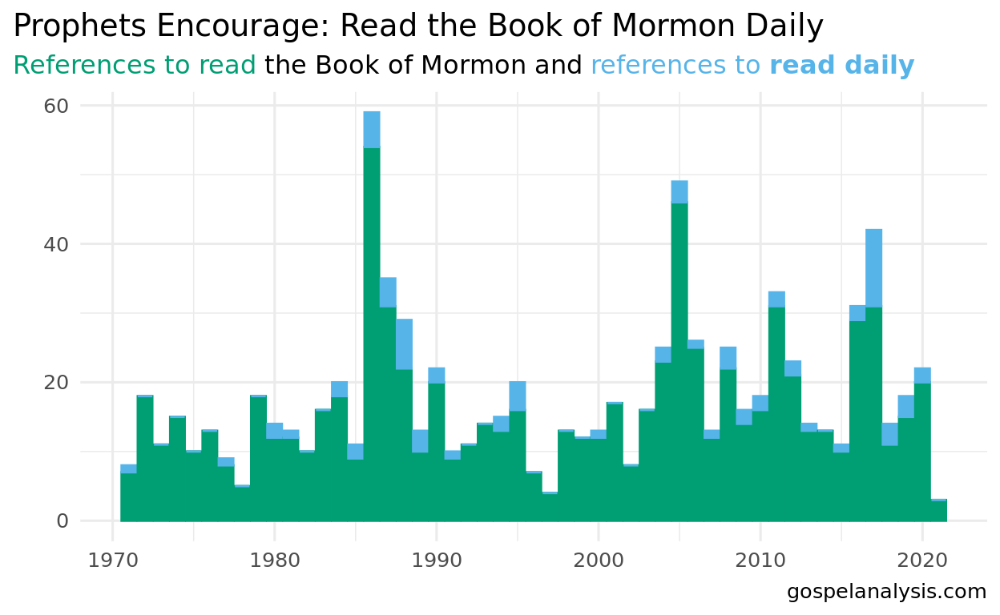

Is it just modern counsel?
The word read appears 1,026 times in the scriptures, with 135 appearances in the Book of Mormon. Isn’t it interesting that the first chapter and the last chapter of the Book of Mormon both talk about reading? 1 Nephi tells us about Lehi sharing a vision he had, where he was invited to read a book of scripture by angels. And Moroni 10 tells us to ponder the Book of Mormon and pray to know if it’s true.
Here’s a verse in the first chapter:
And they came down and went forth upon the face of the earth; and the first came and stood before my father, and gave unto him a book, and bade him that he should read. (1 Ne. 1:11)
And an invitation in the last chapter:
Behold, I would exhort you that when ye shall read these things, if it be wisdom in God that ye should read them, that ye would remember how merciful the Lord hath been unto the children of men, from the creation of Adam even down until the time that ye shall receive these things, and ponder it in your hearts. And when ye shall receive these things, I would exhort you that ye would ask God, the Eternal Father, in the name of Christ, if these things are not true; and if ye shall ask with a sincere heart, with real intent, having faith in Christ, he will manifest the truth of it unto you, by the power of the Holy Ghost. (Moroni 10:4-5)
Consider the power of this: the Book of Mormon is an inspired text. It was received by revelation by the prophets who wrote it, and those same prophets encourage us to receive revelation for ourselves. This is so vital, in fact, that the prophets in the scriptures offer deep warnings about not reading scriptures:
Now I need not rehearse the matter; what I have said may suffice. Behold, the scriptures are before you; if ye will wrest them it shall be to your own destruction. (Alma 13:20)
And this I do that I may establish my gospel, that there may not be so much contention; yea, Satan doth stir up the hearts of the people to contention concerning the points of my doctrine; and in these things they do err, for they do wrest the scriptures and do not understand them. (D&C 10:63)
To unbelievers, prophets in the scriptures have often asked, “have ye not read?”:
Clearly the Lord gives us scriptures and expects us to read them and understand them. How do we understand them? By the Holy Ghost.
And by the power of the Holy Ghost ye may know the truth of all things. (Moro. 10:5)
Since the dawn of the Restored church, prophets have spoken of the power of the Book of Mormon, starting with Joseph Smith:
the Book of mormon was the most correct of any book on earth, and the keystone of our religion, and a man would get nearer to God by abiding by its precepts, than by any other book. - Joseph Smith, Introduction to the Book of Mormon
The earliest invitation in our 1971-2020 corpus is by Loren C. Dunn in April, 1971:
I asked them if in the next three months they would resolve to keep themselves morally clean and in harmony with the principles of virtue which the Savior taught. They said they would. And then I suggested they establish a schedule, on their own, during the next three months to read the Book of Mormon from cover to cover—a few pages each day, with a prayer at each reading that the Lord would bless them to know if the book is true and actually from him. They agreed.
Loren C. Dunn Drink of the Pure Water, Apr 1971
In 1986, there were 59 references to the Book of Mormon with additional mention of words like “read”, “study”, or "ponder. 5 of these references called to read the Book of Mormon daily:

The importance of this daily invitation returned in 2017 from President Monson:
Consider reading through this list of all invitations to read the Book of Mormon daily. What promises do you see?